텔레마케팅관리사 (2010-08-13 기출문제)
1과목: 판매관리
1. 제품 또는 서비스의 가격 결정시 상대적인 고가전략이 적합한 경우는?
- 시장수요의 가격탄력성이 높을 때
- 원가우위를 확보하고 있어 경쟁기업이 자사 상품의 가격만큼 낮추기 힘들 때
- 시장에 경쟁자의 수가 많을 것으로 예상될 때
- 진입장벽이 높아 경쟁기업의 진입이 어려울 때
(정답률: 80%)

2. 소비자 구매의사 결정 과정을 바르게 연결한 것은?
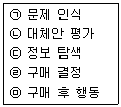
- ㉠ → ㉡ → ㉢ → ㉣ → ㉤
- ㉡ → ㉠ → ㉢ → ㉣ → ㉤
- ㉠ → ㉢ → ㉡ → ㉣ → ㉤
- ㉡ → ㉢ → ㉠ → ㉣ → ㉤
(정답률: 92%)
3. 다음 중 유통경로의 설계과정을 바르게 나열한 것은?
- 고객욕구 분석 → 유통경로의 목표 설정 → 경로대안의 평가 → 주요 경로대안의 식별
- 고객욕구 분석 → 유통경로의 목표 설정 → 주요 경로대안의 식별 → 경로대안의 평가
- 고객욕구 분석 → 주요 경로대안의 식별 → 유통경로의 목표 설정 → 경로대안의 평가
- 고객욕구 분석 → 주요 경로대안의 식별 → 경로대안의 평가 → 유통경로의 목표 설정
(정답률: 72%)
4. 대중마케팅과 데이터베이스마케팅의 비교 설명으로 옳은 것은?
- 대중마케팅은 고객을 개별적으로 대우하고 데이터베이스마케팅은 고객을 동일한 집단으로 대우한다.
- 대중마케팅은 정량적 측정을 통한 지속적인 개선을 하고 데이터베이스마케팅은 정성적 측정 및 일회성 실행을 한다.
- 대중마케팅은 쌍방적이고 고객과의 관계를 근간으로 하고 데이터베이스마케팅은 일회적인 거래를 근간으로 한다.
- 대중마케팅은 고객의 수를 극대화하는 판매 중심적이고 데이터베이스마케팅은 고객의 생애가치를 극대화한다.
(정답률: 89%)
5. 기업의 전략적 사업단위(SBU)를 분석하는 데 이용되는 BCG(Boston Consulting Group) 모형에서 수평축은 무엇을 반영하는 것인가?
- 희망투자수익률
- 시장성장률
- 세분시장 규모
- 상대적 시장점유율
(정답률: 77%)
6. 다음 ( ) 안에 들어갈 가장 알맞은 것은?
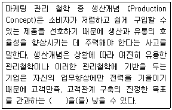
- 마케팅 근시안(Marketing Myopia)
- 인지 부조화(Cognitive Dissonance)
- 소비자 외면
- 선별적 관계 관리
(정답률: 80%)
7. 판매전략을 위한 시장세분화 변수 중 인구통계적 변수에 해당하지 않는 것은?
- 성 별
- 연 령
- 개 성
- 교육수준
(정답률: 54%)
8. 가격 결정에 영향을 미치는 요인을 내적 요인과 외적 요인으로 구분할 때, 내적 요인이 아닌 것은?
- 마케팅목표
- 마케팅믹스 전략
- 원 가
- 시장과 수요
(정답률: 73%)
9. 다음 중 직접유통경로의 단점이 아닌 것은?
- 판매자에게 업무가 과중된다.
- 사업확장에 어려움이 따른다.
- 고객에의 접근이 어렵다.
- 시장의 범위가 한정된다.
(정답률: 65%)
10. 다음 중 아웃바운드 텔레마케팅에 해당하지 않는 것은?
- 기존 고객에 대한 추가 판매
- DM(다이렉트 메일) Follow Up Call
- DRA(직접반응광고) 응대 Call
- 연체 회수 관리 업무
(정답률: 86%)
11. 다음 중 전통적인 마케팅 믹스의 4가지 요소에 포함되지 않는 것은?
- 제품(Product)
- 가격(Price)
- 생산성(Productivity)
- 촉진(Promotion)
(정답률: 알수없음)
12. A전자에서 세계 최대 크기의 LCD TV를 개발했다는 것이 뉴스를 통해 알려진 경우에 적합한 촉진 전략은?
- 광 고
- 홍 보
- 판매촉진
- 인적 판매
(정답률: 84%)
13. 효과적인 시장세분화의 요건으로 틀린 것은?
- 측정 가능성
- 규 모
- 세분시장 간의 동질성
- 접근 가능성
(정답률: 알수없음)
14. 상표전략 중 계열확장(Line Extension)에 관한 설명으로 옳은 것은
- 기존의 상표명을 기존의 제품범주의 새로운 형태, 크기, 맛 등에 확대한다.
- 기존의 상표명을 새로운 제품범주로 확대한다.
- 새로운 상표명을 동일한 제품범주에 도입한다.
- 신제품 범주에 새로운 상표명을 부여한다.
(정답률: 60%)
15. 다음의 특징을 가지는 소비재 유형은?
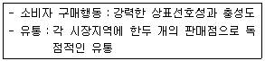
- 편의품
- 선매품
- 전문품
- 비탐색품
(정답률: 82%)
16. 서비스의 특성에 대한 설명으로 틀린 것은?
- 서비스는 재고 형태로 보존할 수 없다.
- 서비스는 동질적이다.
- 서비스 생산에는 고객이 참여하게 된다.
- 서비스를 제공받기 전에는 서비스의 품질을 인식할 수 없다.
(정답률: 50%)
17. 다음 중 유통기관으로서의 소매상의 기능과 가장 거리가 먼 것은?
- 생산자의 제품을 소비자에게 판매하며, 제품의 보관 및 운송 등을 담당한다.
- 다양한 제품 구색을 갖추어 소비자에게 선택의 폭을 넓혀준다.
- 소비자들이 원하는 제품을 생산하고, 애프터서비스를 제공한다.
- 생산자와 소비자에게 필요한 정보를 제공한다. 다. 생산자와 도매상의 기능이다.
(정답률: 47%)
18. 아웃바운드 텔레마케팅의 성공요인과 가장 거리가 먼 것은?
- 브랜드 품질의 확보와 신뢰성
- 고객 니즈에 맞는 전용상품과 특화된 서비스 발굴
- 정확한 대상고객의 선정
- 탄력적인 인력 배치
(정답률: 62%)
19. 다음 중 고객의 로열티 형성에 영향을 미치는 요소와 가장 거리가 먼 것은?
- 구매횟수
- 사회적 지위
- 추천·소개 정도
- 이용기간과 이용실적
(정답률: 알수없음)
20. 일반적인 소비재의 유통경로를 바르게 나열한 것은?
- 생산자 → 소매상 → 도매상 → 소비자
- 생산자 → 도매상 → 소매상 → 소비자
- 도매상 → 생산자 → 소매상 → 소비자
- 도매상 → 소매상 → 생산자 → 소비자
(정답률: 84%)
21. 다음 중 세분시장의 평가에 대한 설명으로 틀린 것은?
- 세분시장이 기업의 목표와 일치한다면 그 세분시장에서 성공하는 데 필요한 기술과 자원을 보유한 것으로 본다.
- 세분시장을 평가하기 위하여 가장 먼저 각각의 세분시장의 매줄액, 성장률 그리고 기대수익률을 조사하여야 한다.
- 세분시장 내에 강력하고 공격적인 경쟁자가 다수 포진하고 있다면 그 세분시장의 매력성은 크게 떨어진다.
- 세분시장 내에 다양한 대체상품이 존재하는 경우에는 당해 상품의 가격이나 이익에도 많은 영향을 미친다. 가. 세분시장이 기업의 목표와 일치한다고 해서 기술과 자원을 보유한 것으로 보긴 어렵다.
(정답률: 69%)
22. 제품의 수명주기별 특성에 따라 기업이 효율적으로 실행할 수 있는 전략과 가장 거리가 먼 것은?
- 도입기 - 얼리어답터 등 제품의 조기 수용층의 규명
- 성장기 - 브랜드 선호의 개발
- 성숙기 - 경쟁자의 판촉과 균형 유지
- 쇠퇴기 - 긍정적인 구전커뮤니케이션 자극
(정답률: 75%)
23. 다음 중 재포지셔닝(Repositioning)에 관한 설명으로 틀린 것은?
- 지금까지 유지되어 온 현재의 위치를 버리고 새로운 포지션을 찾아가는 방법이다.
- 경쟁자의 진입으로 시장 내의 차별적 우위 유지가 힘들게 되었을 때 재포지셔닝이 필요하다.
- 기존의 포지션이 진부해져 매력이 상실되었을 경우에 재포지셔닝을 고려한다.
- 소비자의 인식과 기업이 바라는 포지션이 같을 경우 기존의 포지션을 바꿀 필요성이 생길 수 있다.
(정답률: 73%)
24. 다음 중 마케팅활동을 수행하는 데 있어 가장 첫 번째 과업은?
- 소비자의 욕구를 발견하는 것
- 경쟁자의 욕구를 발견하는 것
- 경쟁자의 욕구를 충족시키는 것
- 판매자의 욕구를 충족시키는 것
(정답률: 60%)
25. 다음 중 기업이 새로운 상품을 개발하고 새로운 시장을 찾아나서야 하는 시장-제품전략은?
- 시장침투(Market Penetration)
- 시장개발(Market Development)
- 제품개발(Product Development)
- 다각화(Diversification)
(정답률: 64%)
2과목: 시장조사
26. 다음 중 표준화 면접의 장점과 가장 거리가 먼 것은?
- 신뢰도가 높다.
- 타당도가 높다.
- 정보의 비교가 가능하다.
- 면접결과의 수치화가 용이하다.
(정답률: 37%)
27. 다음 중 단순히 측정대상을 구분하기 위한 목적으로 숫자를 부여하는 데 사용되는 척도는?
- 명목척도
- 서열척도
- 등간척도
- 비율척도
(정답률: 42%)
28. 다음 중 탐색적 조사방법(Exploratory Research)에 해당하지 않는 것은?
- 유관분야의 관련문헌 조사
- 변수 간의 상관관계에 관한 조사
- 통찰력을 얻을 수 있는 소수의 사례조사
- 연구문제에 정통한 경험자를 대상으로 한 조사
(정답률: 60%)
29. 다음에 나타나는 측정상의 문제점은?
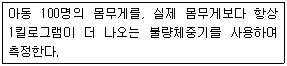
- 타당성이 없다.
- 대표성이 없다.
- 안정성이 없다.
- 일관성이 없다.
(정답률: 알수없음)
30. 다음과 같이 시장 내의 여러 경쟁 상표들에 대한 소비자의 생각을 하나의 도표상에 나타낸 것은?
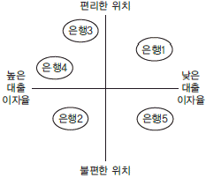
- 로드맵
- 포지셔닝맵
- 횡단조사표
- 종단조사표
(정답률: 54%)
31. 질문지 작성시 폐쇄형 질문의 장점이 아닌 것은?
- 부호화와 분석이 용이하여 시간과 경비를 절약할 수 있다.
- 민감한 주제에 보다 적합하다.
- 질문지에 열거하기에는 응답범주가 너무 많을 경우에 사용하면 좋다.
- 질문에 대한 대답이 표준화되어 있기 때문에 비교가 가능하다.
(정답률: 알수없음)
32. 우편조사의 응답률에 영향을 미치는 요인과 가장 거리가 먼 것은?
- 응답집단의 동질성
- 응답자의 지역적 범위
- 질문지의 양식 및 우송방법
- 연구주관기관 및 지원단체의 성격
(정답률: 62%)
33. 인터넷 설문조사의 특징에 관한 설명으로 틀린 것은?
- 설문응답이 편리하다.
- 표본 수가 많아지면 추가비용이 많이 든다.
- 설문에 대한 응답을 빨리 회수할 수 있다.
- 인터뷰 비용 없이 설문응답자와 상호작용할 수 있다.
(정답률: 70%)
34. 다항선택식 질문(복수응답) 작성시 주의할 점이 아닌 것은?
- 선택항목은 논리적이어야 한다.
- 선택항목은 하나의 차원에서 제시되어야 한다.
- 각 선택항목이 너무 유사하거나 같으면 좋지 않다.
- 선택항목은 서로 배타적이지 않고 구체적이어야 한다.
(정답률: 알수없음)
35. 개인의 사생활(Privacy) 보호와 면접조사가 어려울 때 실시할 수 있는 조사방법으로 가장 적합한 것은?
- 우편으로 질문지를 배포하고 전화로 조사한다.
- 조사원을 이용하여 질문지를 배포하고 전화로 조사한다.
- 조사원을 이용하여 질문지를 배포하고 우편으로 회수한다.
- 조사대상자들을 한 자리에 모아 질문지를 배포하고 전화로 조사한다.
(정답률: 70%)
36. 측정도구의 타당도 평가방법에 대한 설명으로 틀린 것은?
- 크론바하 알파값을 산출하여 문항 상호 간의 일관성을 측정한다.
- 한 측정치를 기준으로 다른 측정치와의 상관관계를 추정한다.
- 개념타당도는 측정하고자 하는 개념이 실제로 적절하게 측정되었는가를 의미한다.
- 내용타당도는 점수 또는 척도가 일반화하려고 하는 개념을 어느 정도 잘 반영해주는 가를 의미한다.
(정답률: 59%)
37. 다음은 마케팅조사의 어느 단계에 해당하는가?
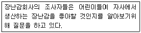
- 표적시장의 결정
- 적절한 정보의 수집
- 문제의 정의
- 조사계획의 수립
(정답률: 10%)
38. 마케팅문제와 기회를 규명하고 정의하여 마케팅활동을 할 수 있도록 하는 것은?
- 광 고
- 판매촉진
- 공중관계
- 마케팅조사
(정답률: 70%)
39. 다음 사례에서 A유통업자의 표본추출방법은?
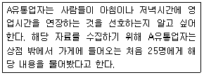
- 비확률표본추출
- 확률표본추출
- 통계적 추론
- 기준표본추출
(정답률: 37%)
40. 시장조사시 조사자가 지켜야 할 사항과 가장 거리가 먼 것은?
- 조사 대상자의 존엄성과 사적인 권리를 존중해야 한다.
- 조사결과는 성실하고 정확하게 보고하여야 한다.
- 자료의 신뢰성과 객관성을 확보하기 위해 자료원 보호는 반드시 배제해야 한다.
- 조사의 목적을 성실히 수행하여야 하며, 조사결과의 왜곡, 축소 등은 회피하여야 한다.
(정답률: 80%)
41. 마케팅조사자가 회사 내의 다른 부서에서 작성한 리포트, 재무보고서, 서베이 자료 등을 활용한다면, 이 조사자는 다음 중 어떤 것을 이용한 것인가?
- 내부 1차 자료
- 내부 2차 자료
- 외부 1차 자료
- 외부 2차 자료
(정답률: 55%)
42. 다음 중 코딩과 분석이 용이하고, 응답하기가 쉽고 협조를 쉽게 얻어낼 수 있으며 조사자에 의한 영향을 배제할 수 있는 질문형태는?
- 자유응답형
- 양자택일형
- 다지선다형
- 가치개입형
(정답률: 알수없음)
43. 다음 중 설문지 작성 원칙으로 틀린 것은?
- 질문은 간결하게 한다.
- 질문은 가치중립적이어야 한다.
- 규범적인 응답을 자아내도록 한다.
- 응답자의 수준에 맞는 언어를 사용한다.
(정답률: 64%)
44. 다음 중 체계적인 설문지 작성과정을 바르게 나열한 것은?
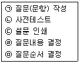
- ㉠ → ㉡ → ㉢ → ㉣ → ㉤
- ㉣ → ㉠ → ㉤ → ㉡ → ㉢
- ㉡ → ㉠ → ㉤ → ㉣ → ㉢
- ㉢ → ㉤ → ㉣ → ㉠ → ㉡
(정답률: 알수없음)
45. 측정의 수준에 따라 4가지 종류의 척도로 구분할 때, 가장 적은 정보를 갖는 척도부터 가장 많은 정보를 갖는 척도를 그 순서대로 나열한 것은?
- 명목척도＜비율척도＜등간척도＜서열척도
- 서열척도＜명목척도＜등간척도＜비율척도
- 명목척도＜서열척도＜등간척도＜비율척도
- 명목척도＜서열척도＜비율척도＜등간척도
(정답률: 55%)
46. 다음 중 실험연구의 장점과 가장 거리가 먼 것은?
- 변인 간의 인과관계를 증명할 수 있다.
- 연구의 결과를 일반화할 수 있다.
- 피실험자들의 개인차를 통제할 수 있다.
- 내적 타당성을 확보할 수 있다.
(정답률: 28%)
47. 표본 프레임(Sampling Frame)에 관한 설명으로 틀린 것은?
- 표본을 추출하기 위한 모집단의 목록이다.
- 표본추출단위가 집단인 경우에는 표본 프레임은 집단별 목록만 있으면 된다.
- 비확률표본추출방법을 이용할 경우에는 정확한 표본프레임이 있어야 한다.
- 정확한 확률표본추출을 하기 위해서는 모집단과 정확하게 일치하는 표본프레임이 확보되어야 한다.
(정답률: 알수없음)
48. 다음 중 종단조사와 횡단조사의 비교 설명으로 틀린 것은?
- 종단조사는 동일한 현상을 동일한 대상에 대해 반복적으로 측정을 하는 조사방법이고, 횡단조사는 특정시점에서의 집단 간 차이를 연구하는 방법이다.
- 종단조사는 시간의 흐름에 따른 조사대상의 특성 변화를 측정하지만, 횡단조사는 특정시점에 다른 특성을 지니고 있는 집단들 사이의 차이를 측정하고자 하는 것이다.
- 종단조사는 동태적인 성격이라 할 수 있고, 횡단조사는 정태적인 성격이라 할 수 있다.
- 종단조사는 조사대상의 특성에 따라 집단을 나누어 비교분석하기 때문에 횡단조사에 비해 표본의 크기가 상대적으로 크다.
(정답률: 알수없음)
49. 다음 중 표본추출을 할 때 가장 먼저 해야 하는 사항은?
- 모집단 규정
- 표본크기 산출
- 표본체계 확인
- 표본 할당
(정답률: 60%)
50. 다음 질문문항이 부적합한 이유는?
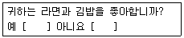
- 유도신문이기 때문이다.
- 한 번에 두 개의 질문을 하기 때문이다.
- 적합성이 떨어지기 때문이다.
- 응답자의 의견을 묻고 있기 때문이다.
(정답률: 74%)
3과목: 텔레마케팅관리
51. 한 사람의 부하가 두 명 이상의 상사로부터 명령을 받아, 명령일원화의 원칙이 적용되지 않는 조직형태는?
- 라인 조직
- 라인스탭 조직
- 사업부제 조직
- 매트릭스 조직
(정답률: 55%)
52. 다음 중 콜센터 리더의 역할에 관한 설명으로 틀린 것은?
- 상담원의 업무성과를 높이기 위해서는 잘하는 점에 대한 칭찬보다는 잘못에 대한 호된 질책이 더 중요하다.
- 단순히 상담원의 부족한 면을 지적해 주는 것이 아니라 상담원이 그것을 넘어설 수 있도록 스킬을 가르쳐 주고 훈련시켜 주어야 한다.
- 상담원이 교육받은 내용대로 업무를 하지 않고 적절하지 않은 행동을 했다면 원인 파악을 해야 한다.
- 가장 좋은 코칭의 방법은 강압적인 자세로 대하지 말고 상담원 스스로 이해할 수 있도록 결론을 이끌어 주는 것이다.
(정답률: 84%)
53. 통화품질 관리의 목적으로 가장 적합한 것은?
- 텔레마케터의 사적인 통화 방지
- 텔레마케터가 제대로 통화하는지 감시
- 통화품질 결과를 텔레마케터의 급여에 반영
- 통화품질 개선으로 고객에 대한 서비스 향상
(정답률: 알수없음)
54. 인바운드 콜센터 조직에 대한 설명으로 옳은 것은?
- 인바운드형 콜센터는 무엇보다 고객상담 서비스의 질적인 관리와 업그레이드가 요구된다.
- 외부로부터 걸려오는 전화를 받아서 처리하는 곳이기 때문에 전화량의 명확한 사전 예측을 할 필요가 없다.
- 인바운드형 콜센터는 각종 광고나 알림, 서비스 개선 약속을 대중매체를 통해 하는 곳이다.
- 인바운드형 콜센터는 고객이 전화했으므로 전문적인 상담스킬을 필요로 하지 않는다.
(정답률: 62%)
55. 리더십 역량 측정에 관한 용어의 설명으로 틀린 것은?
- 명확성 - 의사소통시 명확한 자신의 의사를 전달하여 직원이 혼란스럽거나 추측하지 않도록 하는 역할
- 신뢰성 - 리더의 권력을 인정함으로 그들이 리더와 자신의 일에 대해 신뢰하게 하는 역할
- 균형잡힌 시각 - 전체 업무에 대한 왜곡되지 않은 시각을 견지하는 역할
- 참여 - 직원들이 그들의 일을 스스로 판단해서 할 수 있도록 허락하는 역할
(정답률: 알수없음)
56. 교육훈련방법 중 역할연기의 실시항목과 가장 거리가 먼 것은?
- 상황 설정
- 스크립트 작성
- 스크립트 수정
- 반복실시
(정답률: 42%)
57. 텔레마케팅을 도입하기 위해 고려해야 할 사항과 가장 거리가 먼 것은?
- 주요 대상 고객 정보
- 텔레마케팅 전문 인력
- 고객만족도
- 마케팅 매체 믹스 전략
(정답률: 46%)
58. 다음 중 텔레마케팅의 특성과 가장 거리가 먼 것은?
- 구매를 설득하기 위한 충분한 시간을 갖기가 어렵다.
- 판매에 필요한 다양한 메시지를 이용하기 용이하다.
- 신속한 사후 서비스를 제공할 수 있다.
- 고객이 가지고 있는 반대의견에 즉각적으로 응대하기가 어렵다.
(정답률: 알수없음)
59. 다음 중 콜센터 리더의 육성방안과 가장 거리가 먼 것은?
- 콜센터 매니지먼트 교육 전문프로그램
- 장기근속 지향의 인사교육 시스템
- 콜센터 리더의 선발과 채용기준 강화
- 타 직종, 타 부서의 과감하고 파격적인 스카우트
(정답률: 75%)
60. 스크립트에 관한 설명으로 틀린 것은?
- 활용목적을 명시한다.
- 간단명료하게 작성한다.
- 수정은 할 수 없다.
- 대화체로 작성한다.
(정답률: 71%)
61. 다음 중 리더십 이론에 관한 설명으로 옳은 것은?
- 특성이론(Trait Theory)에 의하면, 리더는 리더십 행사에서 상황의 영향을 받을 수 있음을 제시한다.
- 피들러(Fiedler)의 상황이론에서는 리더십의 상황요인으로 리더-구성원 관계, 과업구조, 리더의 직위권한을 제시하고 있다.
- 경로-목표이론(Path-goal Theory)에서는 의사결정상황에 따라 리더의 의사결정 유형을 달리하는 의사결정나무(Decision Tree)를 제시하고 있다.
- 관리격자(Managerial Grid)이론에 의하면, 중간관리자에게 가장 적절한 리더십 유형은 중간형(5, 5)이다.
(정답률: 42%)
62. 다음 중 중앙집중형 콜센터의 특징이 아닌 것은?
- 관리가 용이함
- 지역사정에 밝음
- 효율적인 자원 사용
- 낮은 운영비용
(정답률: 알수없음)
63. 성과측정을 위한 인터뷰시 발생하는 오류 중 한 가지 측면에서 뒤떨어질 경우 나머지 모두를 나쁘게 평가하는 것은?
- 각인효과(Horn Effect)
- 후광효과(Halo Effect)
- 대조효과(Contrast Effect)
- 상동효과(Stereotype Effect)
(정답률: 알수없음)
64. 콜센터 내의 팀 업무성과관리에 대한 설명으로 틀린 것은?
- 성과관리는 지속적인 과정으로서 1년에 1회씩 등급을 판정하는 연례행사가 아니다.
- 업무성과관리는 팀이 고객을 만족시키는 능력을 개선하기 위해 노력하는 것에 초점을 맞춰야 한다.
- 팀은 주요 목표달성 상황을 지속적으로 추적하고 토의, 평가하며 의견을 수렴하여야 한다.
- 팀 목표를 설정하면 1년은 목표의 변경 없이 목표를 달성해야 한다.
(정답률: 50%)
65. 텔레마케팅 아웃소싱업체 선정시 유의할 사항이 아닌 것은?
- 콜센터 아웃소싱업체가 인바운드 텔레마케팅 성향이 강한지, 아웃바운드 텔레마케팅 성향이 강한지 해당업체의 특성을 고려해야 한다.
- 아웃소싱 업체의 고객 데이터베이스 관리의 신뢰성 정도를 반드시 점점해야 한다.
- 아웃소싱 업체의 상담원의 자질이 어떠한지를 평가하여야 하며, 편차가 심할 경우 업체 선정을 고려해야 한다.
- 규모가 큰 아웃소싱 업체를 선정하는 것이 가장 효율적이고 콜 생산성을 높일 수 있다.
(정답률: 알수없음)
66. 다음은 어떤 직무평가방법에 관한 설명인가?
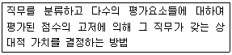
- 점수법(Point Rating Method)
- 직무분류법(Job Classification Method)
- 서열법(Rank Method)
- 과업목록분석(Task Inventory Analysis)
(정답률: 8%)
67. 개인 성과평가의 신뢰성과 공정성을 확보하기 위한 방법으로 틀린 것은?
- 다면평가를 효율적으로 활용한다.
- 평가자에 대해 평가체계, 평가기법 등의 종합적인 평가 관련 교육을 강화한다.
- 평가결과는 비공개로 하고 평가자와 피평가자 간의 면담을 통한 코칭을 활성화한다.
- 피평가자가 평가결과에 불만이 있는 경우 이의제기를 할 수 있는 소통채널을 운영한다.
(정답률: 알수없음)
68. 콜센터 개설시 외부 전문기관에 위탁하여 조직을 운영할 경우의 장점이 아닌 것은?
- 초기 투자비용이 적게 든다.
- 고객정보 보안이 용이하다.
- 최신의 효과적인 기술을 제공받을 수 있다.
- 전문업체인 경우 외국어 등 다양한 유형의 콜을 처리할 수 있다.
(정답률: 65%)
69. 텔레마케팅의 전개과정을 바르게 나열한 것은?
- 기획 → 실행 → 반응 → 측정 → 평가
- 기획 → 실행 → 측정 → 반응 → 평가
- 기획 → 측정 → 실행 → 평가 → 반응
- 기획 → 측정 → 실행 → 반응 → 평가
(정답률: 알수없음)
70. 다음은 어떤 리더십에 관한 설명인가?
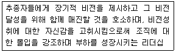
- 거래적 리더십
- 변혁적 리더십
- 전략적 리더십
- 자율적 리더십
(정답률: 알수없음)
71. 텔레마케팅센터에서 임시직원을 채용하는 경우에 얻는 이점과 가장 거리가 먼 것은?
- 스케줄링에 융통성이 있다.
- 임시직원이 직무에 적합하지 않다.
- 교육·훈련 예산을 절감할 수 있다.
- 정규직 전환시 검증된 우수인력을 확보할 수 있다.
(정답률: 10%)
72. 다음 중 직무설계에 관한 용어의 설명으로 틀린 것은?
- 직무설계(Job Design)는 직무에 관한 정보를 수집·분석하여 직무의 내용과 직무담당자의 자격요건을 체계화하는 것이다.
- 직무단순화(Job Simplification)는 직무담당자들이 좁은 범위의 몇 가지 일을 담당하도록 직무를 설계하는 방법이다.
- 직무순환(Job Rotation)은 작업자로 하여금 여러 가지 다양한 직무에 순환근무를 하도록 하여 직무활동을 다각화하는 방법이다.
- 직무확대(Job Enlargement)는 직무수행자의 직무를 다양화하여 직무의 수평적 범위를 넓히는 것이다.
(정답률: 알수없음)
73. 텔레마케터에 대한 OJT 실시시기로 적합하지 않은 것은?
- 신입 상담원이 처음 입사했을 때
- 기존 상담원이 다른 팀에서 전보왔을 때
- 기존 상담원의 실적이 떨어졌을 때
- 우수 상담원이 감독자로 승진하였을 때
(정답률: 알수없음)
74. 조직의 변화를 성공적으로 주도하기 위해 변화가 일어날 수 있도록 추진하는 인사관리자의 역할은?
- 설계자
- 입증자
- 중재자
- 촉진자
(정답률: 42%)
75. 직무중심(Job-based)보상과 역량중심(Competency-based)보상에 관한 설명으로 옳은 것은?
- 직무중심 보상은 지속적인 학습과 개발을 유도한다.
- 역량중심 보상은 인력운영에 있어서 수평적 인력 이동과 같은 유연성이 있다.
- 직무중심 보상은 동일직무에서도 차별적 보상이 가능하다.
- 역량중심 보상은 직무가치에 대한 보상으로 객관성 확보가 상대적으로 용이하다.
(정답률: 알수없음)
4과목: 고객응대
76. 다음은 CRM에 대한 정의를 설명한 글이다. ( ) 안에 들어갈 가장 적합한 것은?
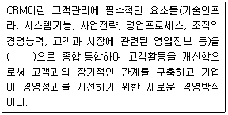
- 기업 중심
- 고객 중심
- 시장 중심
- 영업 중심
(정답률: 64%)
77. 구매 전 고객응대 요령과 가장 거리가 먼 것은?
- 소비자의 니즈 및 구매목표를 간파한다.
- 소비자가 원하는 정보를 제공한다.
- 소비자가 신뢰할 수 있는 상담이 이루어지도록 한다.
- 상담의 문제점, 잘못된 점을 파악한다.
(정답률: 73%)
78. 텔레마케터의 바람직한 음성연출로 적합하지 않은 것은?
- 알맞은 음량
- 또렷한 목소리
- 동일한 목소리톤
- 적당한 말의 속도
(정답률: 67%)
79. 억양을 좀 더 세련되게 다듬기 위한 방법이 아닌 것은?
- 전화로 이야기할 때도 미소를 짓는다.
- 필요한 낱말에 강세를 두는 법을 연습한다.
- 제스처를 활용한다.
- 호흡은 짧고, 빠르게 한다.
(정답률: 34%)
80. 인바운드 상담원이 가져야 할 자질과 가장 거리가 먼 것은?
- 직업의식과 인내력
- 듣기와 말하기 능력
- 문제상황에 대한 대처능력
- 다른 사람에 대한 통제적 성향
(정답률: 70%)
81. 메타그룹의 산업보고서에서 처음 제안된 CRM시스템 아키텍처의 3가지 구성요소가 아닌 것은?
- 통합CRM
- 운영CRM
- 협업CRM
- 분석CRM
(정답률: 42%)
82. CRM을 위한 기업의 마케팅 커뮤니케이션 방식으로 적합하지 않은 것은?
- 통합적 마케팅 커뮤니케이션
- 매스미디어상의 브로드캐스팅광고
- 광고와 실 판매의 기능을 포괄하는 커뮤니케이션
- 프로모션의 효율성과 효과성을 제고할 수 있는 커뮤니케이션
(정답률: 67%)
83. 다음 중 유아독존형 고객의 응대요령으로 가장 적합한 것은?
- 한 가지 상품을 제시하고, 고객을 대신하여 결정을 내린다.
- 근거가 되는 구체적 자료를 제시한다.
- 맞장구와 함께 천천히 용건에 접근한다.
- 묻는 말에 대답하고 의사를 존중한다.
(정답률: 10%)
84. 효과적인 경청기법과 가장 거리가 먼 것은?
- 고객의 의견을 끝까지 경청한다.
- 적절한 질문으로 고객의 니즈를 정확히 파악한다.
- 적극적인 응대어 구사는 고객의 말에 끼어드는 것이므로 자제한다.
- 고객의견 중 중요한 부분은 재확인하여 요구사항을 정확히 파악한다.
(정답률: 64%)
85. 불만족 고객의 심리상태에 관한 설명으로 틀린 것은?
- 자신의 말을 들어주길 원한다.
- 감정적이고 분노하고 있다.
- 모든 것에 대해 수용적이다.
- 심리적으로 보상받기를 원한다.
(정답률: 75%)
86. 커뮤니케이션 채널에 대한 설명으로 틀린 것은?
- 커뮤니케이션 채널은 발신자가 수신자에게 메시지를 전달하는 데 사용되는 수단을 말한다.
- 커뮤니케이션 채널은 크게 인적 채널과 비인적 채널로 나누어진다.
- 인적 채널은 발신자와 수신자 사이의 직접적인 접촉을 통한 커뮤니케이션 방법으로 대중매체와 인터넷과 같은 다이렉트 마케팅 도구들이 포함된다.
- 비인적 채널은 발신자와 수신자 사이의 직접적인 접촉이 없이 메시지가 전달되는 방법으로 인쇄매체, 방송매체 등이 포함된다.
(정답률: 알수없음)
87. 다음 중 조직측면의 CRM 성공요인이 아닌 것은?
- 최고경영자의 관심과 지원
- 고객 및 정보지향적 기업문화
- 전문인력 확보
- 데이터 통합수준
(정답률: 19%)
88. 고객의 구체적 욕구를 알아내기 위해 질문을 할 때 적합하지 않은 것은?
- 상대방의 말을 비판하지 않고 인정하며 수용하는 분위기를 조성한다.
- 가급적이면 긍정적으로 질문을 한다.
- 질문을 구체화·명료화시킨다.
- 고객이 원하는 바를 찾아내기 위한 것이라 해도 추가적인 질문을 하지 않도록 한다.
(정답률: 59%)
89. 다음 중 효과적인 커뮤니케이션 방법으로 가장 적합한 것은?
- 일반화된 약어를 사용한다.
- 전문지식을 화제로 선택한다.
- 개인의 주관적인 생각과 감정을 전달한다.
- 적극적 경청을 통하여 고객의 욕구를 파악한다.
(정답률: 83%)
90. 인터넷 고객상담의 일반적인 원칙과 가장 거리가 먼 것은?
- 고객 지향적 마인드를 제고한다.
- 게시판 정보를 업데이트하고, FAQ 역시 신속하게 데이터베이스화 한다.
- 개인적 의견과 감정에 최대한 충실히 상담한다.
- 사이버상에서 One-stop Service를 제공한다.
(정답률: 70%)
91. 고객가치 평가모델인 RFM에 관한 설명으로 옳은 것은?
- 고객과의 관계에 있어 재무적인 가치뿐만 아니라 관계활동에 대한 질적 측면도 함께 측정할 수 있다.
- 한 고객이 소비하는 제품이나 서비스군 중에서 특정 기업을 통해 제공받는 제품이나 서비스의 비율을 말한다.
- 특정상품 카테고리 내에서 고객이 소비할 수 있는 총액을 말한다.
- 추천을 통해 직접적으로 확보된 고객의 재무적 가치를 말한다.
(정답률: 알수없음)
92. 텔레마케팅을 통한 고객응대 특징이 아닌 것은?
- 고객과 텔레마케터 간의 쌍방향 커뮤니케이션이다.
- 전화장치를 활용한 비대면 중심의 커뮤니케이션이다.
- 텔레마케팅에서는 비언어적인 메시지를 사용하지 않는다.
- 고객상황에 맞추어 융통성 있는 커뮤니케이션이 가능하다.
(정답률: 알수없음)
93. 기업의 입장에서 고객상담의 필요성이 아닌 것은?
- 고객지향적 마케팅 활동을 추진한다.
- 고객에게 기업의 좋은 이미지를 구축한다.
- 고객상담을 신속하게 처리해도 매출감소 현상이 심해진다.
- 제품구매 후 불만고객에게 신속히 피해보상하므로 더 좋은 고객관계를 형성할 수 있다.
(정답률: 82%)
94. 성공적인 텔레마케팅 활동이 되기 위해 미리 준비해야 할 사항과 가장 거리가 먼 것은?
- 고객정보 입력 및 수정
- 예상질문과 답변
- 적정한 구매 제품의 범위
- 정확한 제품지식과 정보
(정답률: 24%)
95. 고객유형에 따른 듣기 커뮤니케이션에서 완고하고 고지식한 고객에게 가장 효과적인 커뮤니케이션 방법은?
- 고객의 저자세에 영향을 받지 말고 성실하고 신중하게 듣는 습관을 길러야 한다.
- 참을성 있게 들으면서 고객의 이야기를 정리·분석하여 핵심을 명확히 하는 것이 필요하다.
- 성실하고 진지한 태도로 들어야 하며 질문의 형식으로 대안이나 반대의견을 말하는 것이 좋다.
- 조용하고도 느긋하게 듣는 습관을 길러야 하며 밝은 분위기로 정확하게 대응한다.
(정답률: 알수없음)
96. 인바운드 텔레마케팅의 일반적인 상담 순서를 바르게 나열한 것은?
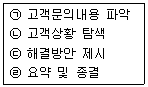
- ㉠ → ㉡ → ㉢ → ㉣
- ㉡ → ㉠ → ㉢ → ㉣
- ㉢ → ㉠ → ㉡ → ㉣
- ㉠ → ㉢ → ㉡ → ㉣
(정답률: 62%)
97. 다음 ( ) 안에 들어갈 알맞은 것은? (순서대로 A, B)
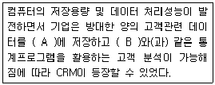
- 데이터 웨어하우스, 데이터베이스
- 데이터 마이닝, 데이터 웨어하우스
- 데이터베이스, 데이터 마이닝
- 데이터 웨어하우스, 데이터 마이닝
(정답률: 28%)
98. 고객이 기업과 만나는 모든 장면에서 결정적인 순간을 의미하며 텔레마케팅이나 CRM에 널리 쓰이는 개념은?
- MOT
- CSP
- LTV
- CTI
(정답률: 55%)
99. 고객의 이야기를 효율적으로 듣는 것을 방해하는 개인적인 장애요인이 아닌 것은?
- 편 견
- 청각장애
- 사고의 속도
- 정보과잉
(정답률: 31%)
100. CRM이 등장하게 된 환경적 요인과 가장 거리가 먼 것은?
- 개별고객 정보의 실시간 활용 가능
- 컴퓨터 및 그에 관련된 정보기술의 발전
- 전산시스템의 구축으로 영업비용의 증가
- 고객데이터의 과학적 분석을 통한 중요정보 추출
(정답률: 알수없음)